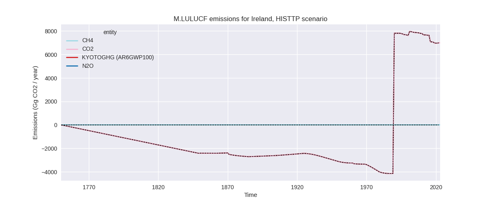
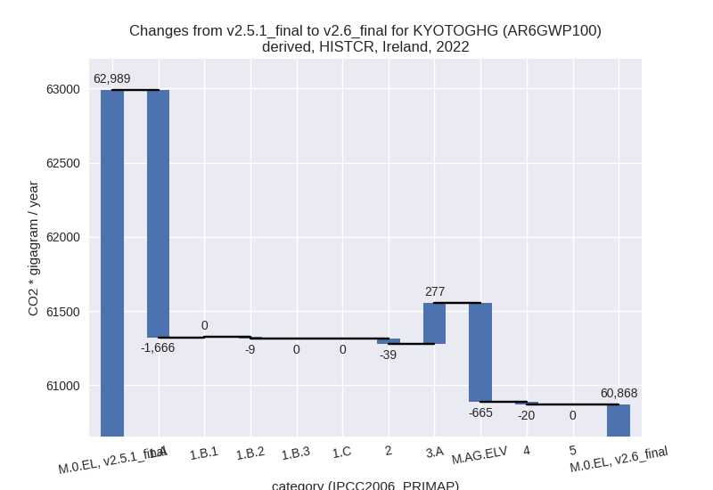
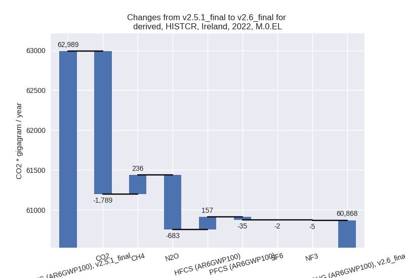

Changes in PRIMAP-hist v2.6_final compared to v2.5.1_final for Ireland
2024-09-24
Johannes Gütschow
Change analysis for Ireland for PRIMAP-hist v2.6_final compared to v2.5.1_final
Overview over emissions by sector and gas
The following figures show the aggregate national total emissions excluding LULUCF AR6GWP100 for the country reported priority scenario. The dotted linesshow the v2.5.1_final data.
The following figures show the aggregate national total emissions excluding LULUCF AR6GWP100 for the third party priority scenario. The dotted linesshow the v2.5.1_final data.

Overview over changes
In the country reported priority scenario we have the following changes for aggregate Kyoto GHG and national total emissions excluding LULUCF (M.0.EL):
- Emissions in 2022 have changed by -3.4%% (-2120.84 Gg CO2 / year)
- Emissions in 1990-2022 have changed by -0.6%% (-367.84 Gg CO2 / year)
In the third party priority scenario we have the following changes for aggregate Kyoto GHG and national total emissions excluding LULUCF (M.0.EL):
- Emissions in 2022 have changed by -0.7%% (-478.96 Gg CO2 / year)
- Emissions in 1990-2022 have changed by 0.6%% (400.87 Gg CO2 / year)
Most important changes per scenario and time frame
In the country reported priority scenario the following sector-gas combinations have the highest absolute impact on national total KyotoGHG (AR6GWP100) emissions in 2022 (top 5):
- 1: 1.A, CO2 with -1667.78 Gg CO2 / year (-4.7%)
- 2: M.AG.ELV, N2O with -693.76 Gg CO2 / year (-12.6%)
- 3: 3.A, CH4 with 279.41 Gg CO2 / year (1.7%)
- 4: 2, HFCS (AR6GWP100) with 156.76 Gg CO2 / year (25.2%)
- 5: 2, CO2 with -154.95 Gg CO2 / year (-6.3%)
In the country reported priority scenario the following sector-gas combinations have the highest absolute impact on national total KyotoGHG (AR6GWP100) emissions in 1990-2022 (top 5):
- 1: M.AG.ELV, N2O with -398.14 Gg CO2 / year (-7.6%)
- 2: 3.A, CH4 with 73.90 Gg CO2 / year (0.5%)
- 3: 1.A, CO2 with -50.37 Gg CO2 / year (-0.1%)
- 4: 2, CO2 with 24.96 Gg CO2 / year (1.1%)
- 5: 4, CH4 with -9.50 Gg CO2 / year (-0.8%)
In the third party priority scenario the following sector-gas combinations have the highest absolute impact on national total KyotoGHG (AR6GWP100) emissions in 2022 (top 5):
- 1: 4, CH4 with -266.43 Gg CO2 / year (-28.0%)
- 2: 1.A, CO2 with -177.11 Gg CO2 / year (-0.5%)
- 3: 2, CO2 with -145.60 Gg CO2 / year (-6.4%)
- 4: 2, HFCS (AR6GWP100) with 99.13 Gg CO2 / year (18.0%)
- 5: 2, PFCS (AR6GWP100) with -25.36 Gg CO2 / year (-26.8%)
In the third party priority scenario the following sector-gas combinations have the highest absolute impact on national total KyotoGHG (AR6GWP100) emissions in 1990-2022 (top 5):
- 1: 4, CH4 with 474.89 Gg CO2 / year (31.9%)
- 2: 2, CO2 with -72.61 Gg CO2 / year (-3.6%)
- 3: 2, N2O with -12.09 Gg CO2 / year (-3.8%)
- 4: 4, N2O with 6.24 Gg CO2 / year (7.0%)
- 5: 2, HFCS (AR6GWP100) with 3.00 Gg CO2 / year (0.4%)
Notes on data changes
Here we list notes explaining important emissions changes for the country. ’' means that the following text only applies to the TP time series, while means that it only applies to the CR scenario. Otherwise the note applies to both scenarios.
- The 2024 EEA inventory data has been included.
- The change in 2022 energy CO2 data comes from an emissions decline in the 2024 EEA data where EI2023 showed an emission increase.
- N2O from agriculture without livestock is lower in the EEA2024 data than in CRF2023.
- F-gas emissions remained flat in 2022 in contrast to the declining trend of the previous years.
- Cumulative emission in the CR scenario are almost unchanged.
- The lower emissions in M.AG.ELV, N2O are from generally lower emissions estimates in EEA2024.
- We have fixed an extrapolation issue for CO2 from chemical industry (2.B).
- Emissions in the TP scenario have changed only slightly and mainly for f-gases in 2022 with the same reasons as for the CR scenario.
- 2022 emissions and growth rates for cement CO2 are lower for both scenarios as 2022 emissions in the EEA data and the new Andrew cement data are lower than in the Andrew cement data used in v2.5.1
- Changes in sectors 4 and 5 in the TP scenario are due to the removal of FAOSTAT data.
Changes by sector and gas
For each scenario and time frame the changes are displayed for all individual sectors and all individual gases. In the sector plot we use aggregate Kyoto GHGs in AR6GWP100. In the gas plot we usenational total emissions without LULUCF. ## country reported scenario
2022

1990-2022
third party scenario
2022
1990-2022
Detailed changes for the scenarios:
country reported scenario (HISTCR):
Most important changes per time frame
For 2022 the following sector-gas combinations have the highest absolute impact on national total KyotoGHG (AR6GWP100) emissions in 2022 (top 5):
- 1: 1.A, CO2 with -1667.78 Gg CO2 / year (-4.7%)
- 2: M.AG.ELV, N2O with -693.76 Gg CO2 / year (-12.6%)
- 3: 3.A, CH4 with 279.41 Gg CO2 / year (1.7%)
- 4: 2, HFCS (AR6GWP100) with 156.76 Gg CO2 / year (25.2%)
- 5: 2, CO2 with -154.95 Gg CO2 / year (-6.3%)
For 1990-2022 the following sector-gas combinations have the highest absolute impact on national total KyotoGHG (AR6GWP100) emissions in 1990-2022 (top 5):
- 1: M.AG.ELV, N2O with -398.14 Gg CO2 / year (-7.6%)
- 2: 3.A, CH4 with 73.90 Gg CO2 / year (0.5%)
- 3: 1.A, CO2 with -50.37 Gg CO2 / year (-0.1%)
- 4: 2, CO2 with 24.96 Gg CO2 / year (1.1%)
- 5: 4, CH4 with -9.50 Gg CO2 / year (-0.8%)
Changes in the main sectors for aggregate KyotoGHG (AR6GWP100) are
- 1: Total sectoral emissions in 2022 are 34269.98 Gg
CO2 / year which is 56.3% of M.0.EL emissions. 2022 Emissions have
changed by -4.7% (-1674.17 Gg CO2 /
year). 1990-2022 Emissions have changed by -0.1% (-49.47 Gg CO2 / year). For 2022 the
changes per gas
are:

The changes come from the following subsectors:- 1.A: Total sectoral emissions in 2022 are 34180.70
Gg CO2 / year which is 99.7% of category 1 emissions. 2022 Emissions
have changed by -4.6% (-1666.03 Gg
CO2 / year). 1990-2022 Emissions have changed by -0.1% (-48.91 Gg CO2 / year). For 2022 the
changes per gas
are:
There is no subsector information available in PRIMAP-hist. - 1.B.1: Total sectoral emissions in 2022 are 19.27
Gg CO2 / year which is 0.1% of category 1 emissions. 2022 Emissions have
changed by 2.6% (0.49 Gg CO2 /
year). 1990-2022 Emissions have changed by 0.1% (0.01 Gg CO2 / year). For 2022 the
changes per gas
are:
There is no subsector information available in PRIMAP-hist. - 1.B.2: Total sectoral emissions in 2022 are 70.00
Gg CO2 / year which is 0.2% of category 1 emissions. 2022 Emissions have
changed by -11.0% (-8.63 Gg CO2 /
year). 1990-2022 Emissions have changed by -0.6% (-0.58 Gg CO2 / year). For 2022 the
changes per gas
are:
There is no subsector information available in PRIMAP-hist.
- 1.A: Total sectoral emissions in 2022 are 34180.70
Gg CO2 / year which is 99.7% of category 1 emissions. 2022 Emissions
have changed by -4.6% (-1666.03 Gg
CO2 / year). 1990-2022 Emissions have changed by -0.1% (-48.91 Gg CO2 / year). For 2022 the
changes per gas
are:
- 2: Total sectoral emissions in 2022 are 3190.79 Gg CO2 / year which is 5.2% of M.0.EL emissions. 2022 Emissions have changed by -1.2% (-38.75 Gg CO2 / year). 1990-2022 Emissions have changed by 0.5% (18.76 Gg CO2 / year).
- M.AG: Total sectoral emissions in 2022 are 22528.48 Gg CO2 / year which is 37.0% of M.0.EL emissions. 2022 Emissions have changed by -1.7% (-387.81 Gg CO2 / year). 1990-2022 Emissions have changed by -1.6% (-327.73 Gg CO2 / year).
- 4: Total sectoral emissions in 2022 are 878.73 Gg
CO2 / year which is 1.4% of M.0.EL emissions. 2022 Emissions have
changed by -2.2% (-20.12 Gg CO2 /
year). 1990-2022 Emissions have changed by -0.7% (-9.41 Gg CO2 / year). For 2022 the
changes per gas
are:
- 5: No data
third party scenario (HISTTP):
Most important changes per time frame
For 2022 the following sector-gas combinations have the highest absolute impact on national total KyotoGHG (AR6GWP100) emissions in 2022 (top 5):
- 1: 4, CH4 with -266.43 Gg CO2 / year (-28.0%)
- 2: 1.A, CO2 with -177.11 Gg CO2 / year (-0.5%)
- 3: 2, CO2 with -145.60 Gg CO2 / year (-6.4%)
- 4: 2, HFCS (AR6GWP100) with 99.13 Gg CO2 / year (18.0%)
- 5: 2, PFCS (AR6GWP100) with -25.36 Gg CO2 / year (-26.8%)
For 1990-2022 the following sector-gas combinations have the highest absolute impact on national total KyotoGHG (AR6GWP100) emissions in 1990-2022 (top 5):
- 1: 4, CH4 with 474.89 Gg CO2 / year (31.9%)
- 2: 2, CO2 with -72.61 Gg CO2 / year (-3.6%)
- 3: 2, N2O with -12.09 Gg CO2 / year (-3.8%)
- 4: 4, N2O with 6.24 Gg CO2 / year (7.0%)
- 5: 2, HFCS (AR6GWP100) with 3.00 Gg CO2 / year (0.4%)
Changes in the main sectors for aggregate KyotoGHG (AR6GWP100) are
- 1: Total sectoral emissions in 2022 are 35090.63 Gg CO2 / year which is 55.1% of M.0.EL emissions. 2022 Emissions have changed by -0.5% (-177.11 Gg CO2 / year). 1990-2022 Emissions have changed by -0.0% (-2.46 Gg CO2 / year).
- 2: Total sectoral emissions in 2022 are 2941.40 Gg
CO2 / year which is 4.6% of M.0.EL emissions. 2022 Emissions have
changed by -2.2% (-67.36 Gg CO2 /
year). 1990-2022 Emissions have changed by -2.5% (-80.16 Gg CO2 / year). For 2022 the
changes per gas
are:
For 1990-2022 the changes per gas are: - M.AG: Total sectoral emissions in 2022 are 24806.94 Gg CO2 / year which is 38.9% of M.0.EL emissions. 2022 Emissions have changed by 0.0% (0.00 Gg CO2 / year). 1990-2022 Emissions have changed by 0.0% (0.00 Gg CO2 / year).
- 4: Total sectoral emissions in 2022 are 812.60 Gg
CO2 / year which is 1.3% of M.0.EL emissions. 2022 Emissions have
changed by -24.1% (-258.07 Gg CO2 /
year). 1990-2022 Emissions have changed by 30.0% (480.77 Gg CO2 / year). For 2022 the
changes per gas
are:
For 1990-2022 the changes per gas are: - 5: Total sectoral emissions in 2022 are 85.68 Gg
CO2 / year which is 0.1% of M.0.EL emissions. 2022 Emissions have
changed by 38.0% (23.58 Gg CO2 /
year). 1990-2022 Emissions have changed by 2.2% (2.72 Gg CO2 / year). For 2022 the
changes per gas
are:
For 1990-2022 the changes per gas are: